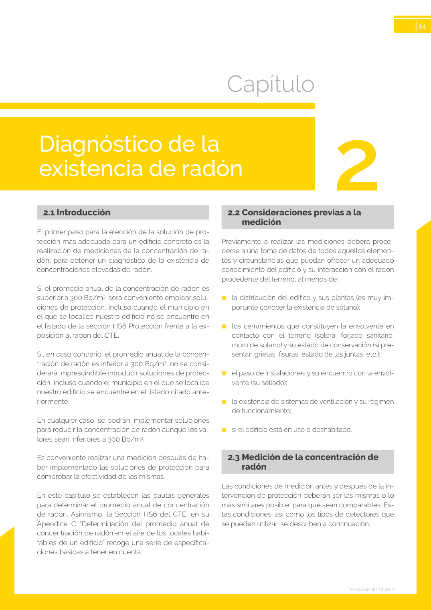

<!doctype html>
<html lang="es"><head><meta charset="utf-8">
<meta name="viewport" content="width=device-width, initial-scale=1">
<title>Apéndice C “Determinación del promedio anual de concentración de radón en el aire de los locales habi­ / 2.2 Consideraciones previas a la medición</title><link rel="stylesheet" href="../estilo.css">
</head><body>
<nav><a href="../index.html">Índice</a> › <a href="../doc/guia-pdf-f3314b0414fe-sin-fecha-e58e54b822cf.html">GUIA</a></nav>

<h1>Apéndice C “Determinación del promedio anual de concentración de radón en el aire de los locales habi­ / 2.2 Consideraciones previas a la medición</h1>
<header class="meta"><p><strong>Guia de rehabilitacion frente al radon Fichas</strong> · edición sin-fecha · capa guia</p>
<p>Documento <code>GUIA-PDF-f3314b0414fe</code> · SHA-256 del PDF <code>e58e54b822cf4ab00e258f0eb50c0f06a8c04e3730a7f530d224485e2a5bb02e</code></p>
<p><a href="../../contenido/docs/GUIA-PDF-f3314b0414fe/sin-fecha__e58e54b822cf/fuente.pdf">Copia fiel del PDF fuente</a> · <a href="https://www.codigotecnico.org/pdf/GuiasyOtros/GuiaRadon/Guia_de_rehabilitacion_frente_al_radon+Fichas.pdf">Fuente oficial</a></p>
<p><a href="https://www.codigotecnico.org/Guias/GuiaRadon.html">Ficha de la disposición en la fuente oficial</a></p>
<div class="cita"><p><a href="../../contenido/docs/GUIA-PDF-f3314b0414fe/sin-fecha__e58e54b822cf/fuente.pdf#page=2">Créditos y autoría en el PDF fuente</a>. Reproducción con cita de fuente y autores.</p>
<p>Permiso literal: Se permite la reproducción total o parcial del contenido de este nible en el momento de su publicación. No se aceptará por las institu­ documento siempre y cuando se cite la fuente original</p>
<details><summary>Leer los créditos completos y la autoría</summary><pre class="literal">Este documento ha sido elaborado por el Instituto de ciencias
de la construcción Eduardo Torroja (IETcc) bajo la supervisión
de la Dirección General de Agenda Urbana y Arquitectura del
Ministerio de Transportes, Movilidad y Agenda Urbana (MITMA).

El IETcc, perteneciente al Consejo Superior de Investigaciones
Científicas (CSIC), es el centro de investigación en edificación
de referencia en España. La Unidad de Calidad en la Construc­
ción del IETcc asesora al MITMA en la elaboración del Código
Técnico de la Edificación que, desde el año 2019, cuenta con la
sección HS6 Protección frente a la exposición al radón.

Dirección y Coordinación:
Ministerio de Transportes, Movilidad y Agenda Urbana
 Isabel Marcos Anasagasti
 Raquel Lara Campos
 Eduardo González de Prado
Instituto de ciencias de la construcción Eduardo Torroja CSIC
 Pilar Linares Alemparte

Autoras:
 Pilar Linares Alemparte
 Sonia García Ortega

Colaboradoras:
 Virginia Sánchez Ramos
 Karina Angélica García Pardo

Edita:
 Centro de Publicaciones Secretaría General Técnica
 Ministerio de Transportes, Movilidad y Agenda Urbana©

Entidad colaboradora:
 Consejo Superior de Investigaciones Científicas · CSIC
 Ministerio de Ciencia e Innovación

    Catálogo de publicaciones de la Administración General
    del Estado: publicacionesoficiales.boe.es

    Centro virtual de publicaciones del Ministerio de Transpor­
     tes, Movilidad y Agenda Urbana: www.mitma.gob.es

    Página web del Código Técnico de la Edificación:

                                                                                                                                                                              SECRETARÍA                                                                                                                                                                     GENERAL                                                                                                                                                                         DE    www.codigotecnico.org                                                                                                                                              AGENDA URBANA                                                                                                                                                                           Y VIVIENDA                                                                                                                                                 MINISTERIO                                                                                                           GOBIERNO                                                                                                                           DE                                                                                                                                           TRANSPORTES,                                                                                                                                                 MOVILIDAD                                                                                                             DE ESPAÑA                                                                                                                               Y AGENDA                                                                                                                           URBANA                                                                                                                                                               DIRECCIÓN                                                                                                                                                                     GENERAL                                                                                                                                                                         DE
Maquetación y diseño gráfico:                                                                                                     AGENDA URBANAY ARQUITECTURA
 Lapizmente. Estrategia • Diseño Gráfico


                                                                                                                                             CIENCIAFotografía portada:                                                                                GOBIERNODE ESPAÑA      MINISTERIODEE INNOVACIÓN
 Sonia García Ortega

Los contenidos o ideas recogidas en este documento pertenecen a
sus autores. Este documento está basado en el conocimiento dispo­     Se permite la reproducción total o parcial del contenido de este
nible en el momento de su publicación. No se aceptará por las institu­     documento siempre y cuando se cite la fuente original y a sus
ciones ni los autores implicados responsabilidad de ningún tipo por el                                                                    autores.
uso de estas recomendaciones. Las figuras tienen carácter ilustrativo
y no deben interpretarse como detalles constructivos.</pre></details></div>
<div class="aviso"><strong>Alcance y límites</strong><ul><li>Extracción automática sin revisión técnica humana completa. Contraste tablas, fórmulas, notas y excepciones con el PDF. La edición disponible no determina la vigencia ni la aplicabilidad a un proyecto.</li><li>Guia o documento divulgativo; no es texto normativo.</li><li>Extracción automática; el cotejo humano está pendiente.</li><li>Semántica y tablas no equivalen a validación exhaustiva.</li></ul></div></header>
<div class="cita">ID técnico a0034 · páginas físicas <a href="../pagina/guia-pdf-f3314b0414fe-sin-fecha-e58e54b822cf__p0014.html">14</a></div>
<nav><a href="guia-pdf-f3314b0414fe-sin-fecha-e58e54b822cf__a0033.html">← a0033</a> · <a href="guia-pdf-f3314b0414fe-sin-fecha-e58e54b822cf__a0035.html">a0035 →</a></nav>
<p>Formatos: <a href="../../contenido/docs/GUIA-PDF-f3314b0414fe/sin-fecha__e58e54b822cf/apartado/a0034__2-2-consideraciones-previas-a-la-medicion.json">JSON del segmento</a> · <a href="../../contenido/docs/GUIA-PDF-f3314b0414fe/sin-fecha__e58e54b822cf/apartado/a0034__2-2-consideraciones-previas-a-la-medicion.md">Markdown</a></p>
<pre class="literal">2.2 Consideraciones previas a la medición
medición
Previamente a realizar las mediciones deberá proce­
derse a una toma de datos de todos aquellos elemen­
tos y circunstancias que puedan ofrecer un adecuado
conocimiento del edificio y su interacción con el radón
procedente del terreno, al menos de:
■
la distribución del edifico y sus plantas (es muy im­
portante conocer la existencia de sótano);
■
los cerramientos que constituyen la envolvente en
contacto con el terreno (solera, forjado sanitario,
muro de sótano) y su estado de conservación (si pre­
sentan grietas, fisuras, estado de las juntas, etc.);
■
el paso de instalaciones y su encuentro con la envol­
vente (su sellado);
■
la existencia de sistemas de ventilación y su régimen
de funcionamiento;
■
si el edificio está en uso o deshabitado.</pre>
<figure><a href="../../contenido/docs/GUIA-PDF-f3314b0414fe/sin-fecha__e58e54b822cf/figura/p0014.png"></a><figcaption>Página visual 14, para contrastar fórmulas, tablas y figuras.</figcaption></figure>
<footer>Generado estáticamente desde el corpus normalizado; sin JavaScript ni servicios externos. El HTML es una vista reproducible; conserve la fuente y la edición al citar.</footer>
</body></html>
